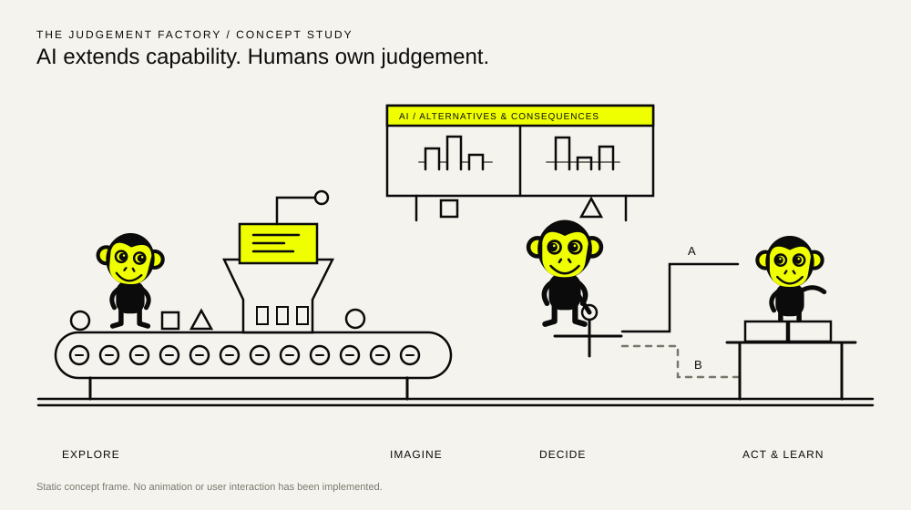
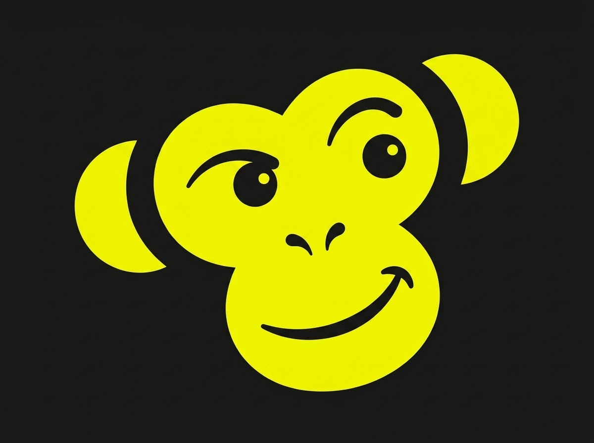
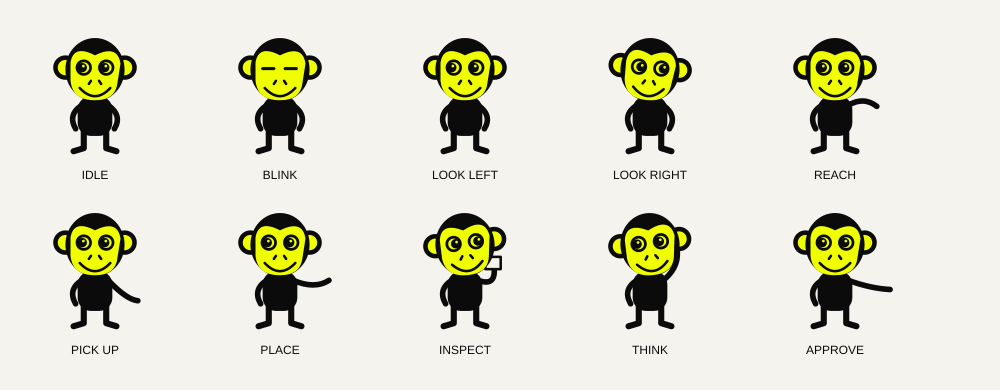
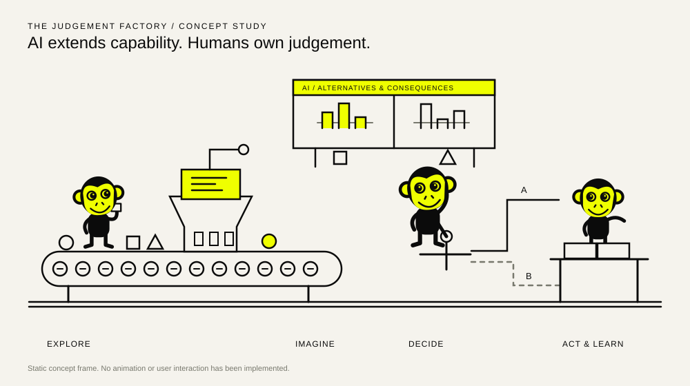
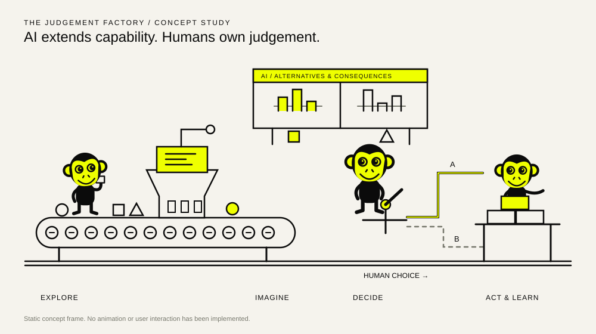
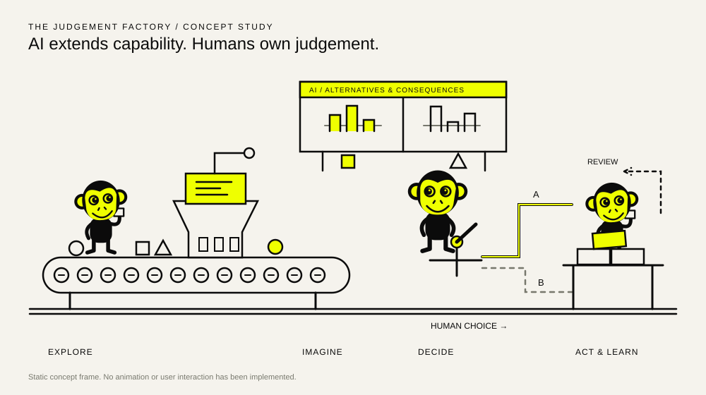

Information arrives
Six information objects enter a steady conveyor. The receiver looks from the incoming object to the sorting throat.

THE SPOTTED APEAI extends capability. Humans own judgement. A compact editorial machine-world in which the decisive action belongs to a person.
Static concept review. No animation, Astro lab route or homepage integration has been built. These drawings propose the composition and choreography for approval.

The receiver inspects organised information. The decision-maker pauses before committing. The builder places a piece, then adjusts it in response to feedback. The first prototype treats the four conceptual activities as one connected scene with two machines.
Preserve the logo’s circular ear rings, double-lobed yellow face, pronounced eye rings, small nose and broad upturned mouth. Use a compact black body and economical limbs. No tail: neither existing brand mark supplies one.


Six information objects enter a steady conveyor. The receiver looks from the incoming object to the sorting throat.
The first machine groups the objects. The second displays two alternative arrangements with different consequences.

The decision-maker looks left, then right, then pauses. The machines remain active but the gate stays closed.

After the pause, the monkey moves the hand lever. One path receives emphasis; the unchosen path remains visible.

A selected piece reaches the builder, who picks it up and places it. The selected route is a commitment, not a success score.

Feedback prompts a small adjustment. The formation remains provisional. A new cycle begins while the previously built piece remains in view.
On mobile, the single character receives the organised options, inspects them, moves the lever and reviews the result. Both paths remain visible. Large HTML controls sit below the illustration; no tiny SVG hit target is required.
The small static composition preserves the narrative without squeezing three monkeys and two machines into a narrow screen.

| Action | Proposed response | Accessible equivalent |
|---|---|---|
| Watch | 16-second repeating process with a three-second examination interval. | Pause/play button; visible process summary. |
| Hover/focus a monkey | One brief glance or blink; then return to its task. | Named focusable HTML control; tap triggers the same reaction. |
| Hover/focus a machine | Only its small local indicator/piston speeds up, capped at 1.5×. | Tap the named machine control; no global speed change. |
| Choose A or B | The monkey acknowledges the request, examines, then moves the hand lever. The other route stays visible. | Two native buttons with pressed state; a polite status announces the committed route. |
| Reduced motion | Static readable scene; labels, route weights and selection state change without spatial animation. | Same buttons and meaning. Explicit play does not override the motion preference. |
Approve or revise the character resemblance, composition, 16-second choreography and the distinction between machines proposing and a human committing. Stage 2 would build only the isolated /lab/monkey-factory/ prototype.